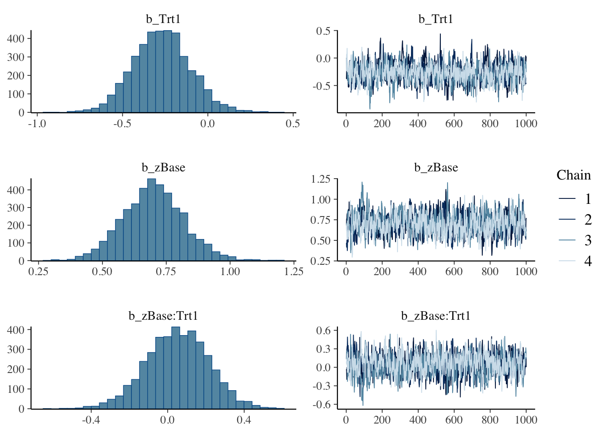

brms を用いたベイズ重回帰分析
BMI データを題材として
2024-12-10
brms はベイズ階層モデリングを，確率的プログラミング言語 Stan をエンジンとして行う R パッケージである． 基本的な線型回帰から固定・変量効果の追加まで極めて簡単に実行できる，大変実用的なパッケージである． 本稿では，brms の基本的な使い方とその実装を紹介する． その中で混合効果モデルについてレビューをする． ランダム効果の追加は縮小推定などの自動的な正則化を可能とする美点がある一方で，係数の不偏推定やロバスト推定に拘る場合はこれを避ける判断もあり得る．
固定効果モデル, 混合効果モデル, 一般化推定方程式
A Blog Entry on Bayesian Computation by an Applied Mathematician
$$
$$
brms リンク集ダウンロードは：
install.packages("brms")brms の使い方Documentation で紹介されている Epilepsy Seizures Data (Leppik et al., 1987)，(Thall and Vail, 1990) を用いた 例 を実行してみる：
library(brms)
formula1 <- bf(count ~ zAge + zBase * Trt + (1|patient))
fit1 <- brm(formula = formula1, data = epilepsy, family = poisson())formula についててんかん (epilepsy) 患者の発作回数 count を被説明変数とし，処置の有無を表す説明変数 Trt と患者毎のランダム誤差を表す切片項 (1|patient)，及び標準化された説明変数 zAge, zBase への依存構造を調べたい．
zAge：標準化された年齢zBase：ベースの発作回数Trt：治療の有無を表す２値変数(1|patient)：患者ごとに異なるとした変動切片項zBase * Trtという記法は，この２つの交互作用もモデルに含めることを意味する．この項の追加により，モデルは zBase の違いに応じて Trt の効果が変わる度合い \(\beta_4\) を取り入れることができる．
このような処置効果 \(\beta_3\) を調べるモデルでは，回帰係数を（因果）効果 (effect) とも呼ぶことに注意．
kable(head(epilepsy))| Age | Base | Trt | patient | visit | count | obs | zAge | zBase |
|---|---|---|---|---|---|---|---|---|
| 31 | 11 | 0 | 1 | 1 | 5 | 1 | 0.4249950 | -0.7571728 |
| 30 | 11 | 0 | 2 | 1 | 3 | 2 | 0.2652835 | -0.7571728 |
| 25 | 6 | 0 | 3 | 1 | 2 | 3 | -0.5332740 | -0.9444033 |
| 36 | 8 | 0 | 4 | 1 | 4 | 4 | 1.2235525 | -0.8695111 |
| 22 | 66 | 0 | 5 | 1 | 7 | 5 | -1.0124085 | 1.3023626 |
| 29 | 27 | 0 | 6 | 1 | 5 | 6 | 0.1055720 | -0.1580352 |
epilepsyは59 人の患者に関して，４回の入院時の発作回数を記録した，全 236 データからなる．patientが患者を識別する ID であり，(1|patient)は患者ごとのランダム効果ということになる．
family=poisson() について被説明変数 count は離散変数であり，Poisson 分布に従うと仮定する．過分散への対応を次の段階で考慮する．
従って本モデルはzAge, zBase, Trt, Trt*zBaseという固定効果（係数），(1|patient)というランダム効果を取り入れた（一般化線型）混合効果モデル である．回帰式は次の通り： \[
y_{it} = \beta_1 \cdot\texttt{zAge}_i+ \beta_2 \cdot \texttt{zBase}_i + \beta_3 \cdot \texttt{Trt}_i
\] \[
+ \beta_4 \cdot (\texttt{zBase}_i \cdot \texttt{Trt}_i) + \alpha_i +\epsilon_{it}.
\] ただし，\(\texttt{count}_{it}\) の Poisson 母数を \(\lambda_{it}\) として，\(y_{it}:=\log(\lambda_{it})\) とした．
family=poisson() は次の略記である：
family = brmsfamily(family = "<family>", link = "<link>")多くの場合 link 引数は省略可能である．この２つの情報を通じて，一般化線型モデルを取り扱うことができる．
brm() 関数による推定結果は，返り値として渡される brmsfit オブジェクトに対して summary() メソッドを適用して見ることができる：
summary(fit1) Family: poisson
Links: mu = log
Formula: count ~ zAge + zBase * Trt + (1 | patient)
Data: epilepsy (Number of observations: 236)
Draws: 4 chains, each with iter = 2000; warmup = 1000; thin = 1;
total post-warmup draws = 4000
Multilevel Hyperparameters:
~patient (Number of levels: 59)
Estimate Est.Error l-95% CI u-95% CI Rhat Bulk_ESS Tail_ESS
sd(Intercept) 0.58 0.07 0.46 0.75 1.00 1016 1779
Regression Coefficients:
Estimate Est.Error l-95% CI u-95% CI Rhat Bulk_ESS Tail_ESS
Intercept 1.78 0.12 1.54 2.02 1.01 959 1321
zAge 0.09 0.09 -0.08 0.26 1.01 765 1399
zBase 0.70 0.12 0.47 0.93 1.01 813 1369
Trt1 -0.27 0.17 -0.61 0.06 1.00 817 1205
zBase:Trt1 0.05 0.16 -0.26 0.36 1.01 819 1692
Draws were sampled using sampling(NUTS). For each parameter, Bulk_ESS
and Tail_ESS are effective sample size measures, and Rhat is the potential
scale reduction factor on split chains (at convergence, Rhat = 1).基本的な解析の前提がまず出力され，推定結果はグループレベル変数（今回は患者ごとの変量効果 \(\alpha_i\)，コードだと (1|patient)）から表示される．
後半に固定効果の係数，特にユニットレベルの回帰係数と切片項の推定結果が表示される．
結果の解釈をしてみる．治療効果Trtの係数は負で，平均的に処置効果はある可能性があるが，95% 信頼区間は \(0\) を跨いでいるという意味では，有意とは言えない．
また交差項zBase*Trtの係数は小さく，交互効果の存在を示す証拠はないと思われる．
\(\widehat{R}\) (Gelman and Rubin, 1992) とは MCMC の収束に関する指標で，１より大きい場合，MCMC が収束していない可能性を意味する (Vehtari et al., 2021)．通説には \(\widehat{R}\le1.1\) などの基準がある．
変数を指定して，事後分布と MCMC の軌跡をプロットできる：
plot(fit1, variable = c("b_Trt1", "b_zBase", "b_zBase:Trt1"))
より詳しく見るにはconditional_effects関数を用いることもできる．
conditional_effects(fit1, effects = "zBase:Trt")処置群 Trt=1 の方がカウントは減っているのは見えるが，モデルの不確実性に比べてその減少量は十分に大きいとは言えない．
ベースレート zBase が大きいほどカウントは大きい．しかしベースレートが大きいほど処置効果も大きい（交互効果がある）ようには見えない．
fit したモデル fit1 を用いて，平均年齢と平均ベースレートを持つ患者に対する治療効果を予測する：
newdata <- data.frame(Trt = c(0, 1), zAge = 0, zBase = 0)
predict(fit1, newdata = newdata, re_formula = NA) Estimate Est.Error Q2.5 Q97.5
[1,] 5.9710 2.530960 2 11.025
[2,] 4.5425 2.178275 1 9.000関数predict() は事後予測分布からのサンプリングを１回行う．一方で，関数fitted() は事後予測分布の平均を返す．1
fitted(fit1, newdata = newdata, re_formula = NA) Estimate Est.Error Q2.5 Q97.5
[1,] 5.953824 0.712907 4.682468 7.518386
[2,] 4.525703 0.545437 3.518021 5.614800モデルfit1で行った Poisson 回帰分析は，fit1に含めた説明変数の違いを除けば，個々の観測が独立になる，という仮定の上に成り立っている（第 4.3 節）．
この仮定が破れているとき＝全ての説明変数をモデルに含めきれていないとき，Poisson 分布の性質 \[ \operatorname{E}[X]=\mathrm{V}[X]=\lambda\qquad (X\sim\mathrm{Pois}(\lambda)) \] からの離反として現れ，この現象は 過分散（overdispersion）とも呼ばれる．
ということで，他の未観測の説明変数が存在した場合を想定して， Poisson 分布族ではなく，分散が平均よりも大きいような別の分布族を用いて，フィット度合いを比較してみることを考えたい．
そこで追加の変動をモデルに追加するべく，モデルfit1に観測ごとの切片項 \(\eta_{it}\) を追加してみる（この手法は観測レベルランダム効果と呼ばれる．第 3.3 節参照）．
fit2 <- brm(count ~ zAge + zBase * Trt + (1|patient) + (1|obs),
data = epilepsy, family = poisson())こうして得た２つのモデル fit1,fit2 を比較する．
LLO (Leave-One-Out) 交差検証 (cross-validation) が関数 loo によって実行できる：
loo(fit1, fit2)loo(fit1, fit2)Warning: Found 8 observations with a pareto_k > 0.7 in model 'fit1'. We
recommend to set 'moment_match = TRUE' in order to perform moment matching for
problematic observations.Warning: Found 68 observations with a pareto_k > 0.7 in model 'fit2'. We
recommend to set 'moment_match = TRUE' in order to perform moment matching for
problematic observations.Output of model 'fit1':
Computed from 4000 by 236 log-likelihood matrix.
Estimate SE
elpd_loo -672.1 37.0
p_loo 94.9 14.9
looic 1344.2 74.1
------
MCSE of elpd_loo is NA.
MCSE and ESS estimates assume MCMC draws (r_eff in [0.4, 2.2]).
Pareto k diagnostic values:
Count Pct. Min. ESS
(-Inf, 0.7] (good) 228 96.6% 140
(0.7, 1] (bad) 7 3.0% <NA>
(1, Inf) (very bad) 1 0.4% <NA>
See help('pareto-k-diagnostic') for details.
Output of model 'fit2':
Computed from 4000 by 236 log-likelihood matrix.
Estimate SE
elpd_loo -596.2 13.9
p_loo 108.4 7.1
looic 1192.4 27.9
------
MCSE of elpd_loo is NA.
MCSE and ESS estimates assume MCMC draws (r_eff in [0.4, 1.7]).
Pareto k diagnostic values:
Count Pct. Min. ESS
(-Inf, 0.7] (good) 168 71.2% 201
(0.7, 1] (bad) 62 26.3% <NA>
(1, Inf) (very bad) 6 2.5% <NA>
See help('pareto-k-diagnostic') for details.
Model comparisons:
elpd_diff se_diff
fit2 0.0 0.0
fit1 -75.9 27.6 elpd_diff は expected log posterior density の差異を表す．fit2 の方が大きく当てはまりが良いことが見て取れる．
また WAIC (Watanabe-Akaike Information Criterion) も実装されている：
print(waic(fit1))print(waic(fit1))Warning:
51 (21.6%) p_waic estimates greater than 0.4. We recommend trying loo instead.
Computed from 4000 by 236 log-likelihood matrix.
Estimate SE
elpd_waic -669.0 36.9
p_waic 91.8 14.8
waic 1338.0 73.8
51 (21.6%) p_waic estimates greater than 0.4. We recommend trying loo instead. print(waic(fit2))Warning:
68 (28.8%) p_waic estimates greater than 0.4. We recommend trying loo instead.
Computed from 4000 by 236 log-likelihood matrix.
Estimate SE
elpd_waic -573.0 12.0
p_waic 85.3 5.1
waic 1146.0 24.0
68 (28.8%) p_waic estimates greater than 0.4. We recommend trying loo instead. 他にも，reloo, kfold などの関数もある．
methods(class="brmsfit") [1] add_criterion add_ic as_draws_array
[4] as_draws_df as_draws_list as_draws_matrix
[7] as_draws_rvars as_draws as.array
[10] as.data.frame as.matrix as.mcmc
[13] autocor bayes_factor bayes_R2
[16] bridge_sampler coef conditional_effects
[19] conditional_smooths control_params default_prior
[22] expose_functions family fitted
[25] fixef formula getCall
[28] hypothesis kfold log_lik
[31] log_posterior logLik loo_compare
[34] loo_linpred loo_model_weights loo_moment_match
[37] loo_predict loo_predictive_interval loo_R2
[40] loo_subsample loo LOO
[43] marginal_effects marginal_smooths mcmc_plot
[46] model_weights model.frame nchains
[49] ndraws neff_ratio ngrps
[52] niterations nobs nsamples
[55] nuts_params nvariables pairs
[58] parnames plot post_prob
[61] posterior_average posterior_epred posterior_interval
[64] posterior_linpred posterior_predict posterior_samples
[67] posterior_smooths posterior_summary pp_average
[70] pp_check pp_mixture predict
[73] predictive_error predictive_interval prepare_predictions
[76] print prior_draws prior_summary
[79] psis ranef reloo
[82] residuals restructure rhat
[85] stancode standata stanplot
[88] summary update VarCorr
[91] variables vcov waic
[94] WAIC
see '?methods' for accessing help and source codeまた fit1 において，同一患者の異なる訪問の間には全く相関がないと仮定されており，これは全く非現実的な仮定をおいてしまっていると言える．2
患者内の相関構造は，brm() 関数の autocor 引数で指定できる（第 4.3.2 節）．
例えば，全く構造を仮定しない場合は unstrを指定する：
fit3 <- brm(count ~ zAge + zBase * Trt + (1|patient),
autocor = ~unstr(time=visit, gr=patient),
data = epilepsy, family = poisson())このモデルも fit1 より遥かに当てはまりが良く，fit2 とほとんど同じ当てはまりの良さが見られる：
loo(fit2,fit3)Warning: Found 68 observations with a pareto_k > 0.7 in model 'fit2'. We
recommend to set 'moment_match = TRUE' in order to perform moment matching for
problematic observations.Warning: Found 57 observations with a pareto_k > 0.7 in model 'fit3'. We
recommend to set 'moment_match = TRUE' in order to perform moment matching for
problematic observations.Output of model 'fit2':
Computed from 4000 by 236 log-likelihood matrix.
Estimate SE
elpd_loo -596.2 13.9
p_loo 108.4 7.1
looic 1192.4 27.9
------
MCSE of elpd_loo is NA.
MCSE and ESS estimates assume MCMC draws (r_eff in [0.4, 1.7]).
Pareto k diagnostic values:
Count Pct. Min. ESS
(-Inf, 0.7] (good) 168 71.2% 201
(0.7, 1] (bad) 62 26.3% <NA>
(1, Inf) (very bad) 6 2.5% <NA>
See help('pareto-k-diagnostic') for details.
Output of model 'fit3':
Computed from 4000 by 236 log-likelihood matrix.
Estimate SE
elpd_loo -600.8 15.0
p_loo 112.1 8.2
looic 1201.6 29.9
------
MCSE of elpd_loo is NA.
MCSE and ESS estimates assume MCMC draws (r_eff in [0.4, 1.5]).
Pareto k diagnostic values:
Count Pct. Min. ESS
(-Inf, 0.7] (good) 179 75.8% 196
(0.7, 1] (bad) 47 19.9% <NA>
(1, Inf) (very bad) 10 4.2% <NA>
See help('pareto-k-diagnostic') for details.
Model comparisons:
elpd_diff se_diff
fit2 0.0 0.0
fit3 -4.6 2.9 思ったよりも fit2 の当てはまりが良いため，Poisson-対数正規混合モデリングを本格的に実施してみることが次の選択肢になり得る（第 3.3 節参照）．
Sebastian Weber らにより，新薬の治験における実際の解析事例をまとめたウェブサイト が公開されている．3
特にその 13 章 では同様の経時的繰り返し観測データを扱っているが，ここではカウントデータではなく連続な応用変数が扱われている．
brms は他にもスプラインや Gauss 過程を用いた一般化加法モデルの推論も可能である (Bürkner, 2018)．
ランダム効果モデルは「通常の固定効果のみを含んだ線型回帰モデルにランダム項を導入したもの」という意味でも用いられる．この場合は 線型混合モデル (Linear Mixed Model; LMM) の別名と理解できる．
ランダム効果 は，変動する切片項 (Gelman, 2005) (Bafumi and Gelman, 2007) という別名も提案されているように，サブグループ毎に異なる切片項のことである．4
ユニット（個人などの最小単位）レベルの回帰式を書き下すと，グループ選択関数 \(s:[n]\to[S]\;(S\le n)\) を通じて， \[ y_i=\alpha_{s[i]}+\beta x_i+\epsilon_i,\qquad i\in[n], \tag{1}\] というようになる．
これは，確率変数 \(\alpha_{s[i]}\) の平均を \(\alpha_0\) とすると，グループレベルの回帰式 \[ \alpha_s=\alpha_0+\eta_s,\qquad s\in[S] \tag{2}\] が背後にある 階層モデル (multilevel / hierarchical model) だとみなすこともできる．
ランダム効果では，ユニットレベルの説明変数 \(x_i\) と変動切片項 \(\alpha_{s}\) が相関を持たないという仮定が Gauss-Markov の定理の仮定に等価になるため，これが違反されると \(\beta\) の OLS 推定量の不偏性・一致性が約束されず，推定量の分散も大きくなる．5
実際，ランダム効果モデルの階層構造を，(2) を (1) に代入することで一つの式にまとめると \[ y_i=\alpha_0+\beta x_i+\underbrace{\epsilon_i'}_{\epsilon_i+\eta_{s[i]}} \tag{3}\] を得る．
\(x_i\) と \(\alpha_{s[i]}\) に相関がある場合，\(x_i\) と \(\eta_s\) にも相関があるため，結果として (3) では説明変数と誤差 \(\epsilon_i'\) に相関が生じてしまう．これは計量経済学では 内生性 (endogeneity) の問題と呼ばれているものに他ならない．
そのため，ランダム効果モデルは避けられる傾向にあり，切片項 \(\alpha_{s[i]}\equiv\alpha_0\) は変動しないとし，グループレベルの効果を無視してモデリングすることも多い： \[ y_i=\alpha_0+\beta x_i+\epsilon_i. \] このことを 完全プーリングモデル (complete pooling model) または母数効果モデルと呼び，ランダム効果モデルを 部分プーリングモデル (partial pooling model) と呼んで対比させることがある．6
周辺モデル (marginal model) や 母平均モデル (population-average model) とも呼ばれる (Gardiner et al., 2009, p. 228)．
実際，これ以上の仮定を置かず，ランダム効果は局外母数として（母数効果ともいう）一般化推定方程式の方法（第 2.6 節）によれば，\(\beta\) の不偏推定が可能である．
リンク関数 \(g\) を通じた非線型モデル \[ g(\operatorname{E}[y_i|x_i])=\beta x_i \] であっても，指数型分布族を仮定すれば（すなわち一般化線型モデルについては），\(\beta\) の一致推定が可能である．
だが，切片項の変動を消してしまうことで，回帰係数 \(\beta\) の推定に対する縮小効果（第 3.2 節）が得られないという欠点もあり，小地域推定などにおいては \(\alpha_{s[i]}\) を確率変数とみなす積極的理由もある．この点については (久保川達也, 2006), (Sugasawa and Kubokawa, 2023) も参照．
問題を起こさずに，しかしながらグループレベルの効果をモデリングしたい場合， \[ y_i=\alpha_{s[i]}^{\text{unmodeled}}+\beta x_i+\epsilon_i \] として，グループ毎に変動する切片項 \(\alpha_{s[i]}^{\text{unmodeled}}\) を許すが，この変数自体にモデルは仮定しない，とすることもできる．
したがってグループ毎に別々の回帰分析を実行し，別々の切片 \(\alpha_{s[i]}^{\text{unmodeled}}\) を得て，\(\beta\) の値はこれらのグループの間で適切に重みづけて最終的な推定値としているに等しい．
すなわち，グループの数だけ，グループへの所属を表す２値変数 \(1_{\left\{s[i]=s\right\}}\) を導入し，\(S\) 個の項 \(\sum_{s=1}^S1_{\left\{s[i]=s\right\}}\alpha_{s[i]}^{\text{unmodeled}}\) を説明変数に加えて回帰分析を行うことに等しい．
また群内平均を引いた値 \(y_i-\overline{y}_{s[i]}\) を目的変数として，説明変数 \(x_i-\overline{x}_{s[i]}\) により回帰分析を行うこととも等価である．この変換により \(\alpha_{s[i]}^{\text{unmodeled}}\) が消去されると考えられるのである．
固定効果モデルは \(\beta\) （のみ）に関心がある場合，\(\alpha_{s[i]}\) と \(x_i\) の相関の存在に対してロバストな推定法として有用であり，その理由で計量経済学（特に線型パネルデータ）では主流の推定手法となっている．10
実際，\(\alpha_{s[i]}\) と \(x_i\) が無相関であるとき，変量効果モデルと固定効果モデルは \(\beta\) に関しては等価な推定量を与える．
Current econometric practice is to prefer robustness over efficiency. Consequently, current practice is (nearly uniformly) to use the fixed effects estmimator for linear panel data models. (Hansen, 2022, p. 624)
逆に言えば，固定効果モデルは \(x_i\) と \(\alpha_{s[i]}\) の構造のモデリングを放棄したモデリング法であり，各 \(\alpha_{s[i]}\) の値にも興味がある場合，または \(\beta\) のより精度の高い推定が実行したい場合には，やはり \(\alpha_{s[i]}\) の誤差と相関構造もモデルに取り入れたランダム効果モデルを用いたいということになる．
ランダム効果モデルは， \[ \alpha_s=\alpha_0+\eta_s,\qquad \eta_s\overset{\text{i.i.d.}}{\sim}\mathrm{N}(0,\sigma^2), \] というグループレベルの回帰モデルの想定された階層モデルと見れるのであった（第 2.1 節）．
すると完全プーリングモデル（第 2.2.2 節）は \(\sigma^2\to0\) の場合，固定効果モデル（第 2.2.3 節）は \(\sigma^2\to\infty\) の場合の，特定の点推定法と見れる．
換言すれば，improper な一様事前分布 \[ \alpha_s^{\text{unmodeled}}\overset{\text{i.i.d.}}{\sim}\mathrm{N}(\alpha_0,\infty) \] を仮定した場合が固定効果モデルであると理解される (Gelman et al., 2014, p. 383)．
この点については次稿も参照：
\(x_i\) と \(\alpha_{s[i]}\) が相関を持つ場合に，効果 \(\beta\) の OLS 推定量の一致性が保証されないことがランダム効果モデルの欠陥だと述べたが，実はこれは簡単な方法で解決できる．
\(x_i\) と \(\alpha_{s[i]}\) との相関は，欠落変数（未観測の交絡因子）が存在するため，と考えることができる．
ランダム効果モデリングではこの欠落変数に対する操作変数を人工的に作り出すことができる．
というのも，説明変数の平均 \(\overline{x}_s\) を変動する切片項 \(\alpha_s\) の説明変数として追加することで除去できる：11
\[ y_i=\alpha_{s[i]}+\beta x_i+\epsilon_i \] \[ \alpha_s=\alpha_0+\alpha_1\overline{x}_s+\eta_s \tag{4}\]
これにより，Gauss-Markov の仮定（外生性）が回復される．
(Bafumi and Gelman, 2007, pp. 7–9) ではこの効果をシミュレーションによって検証している．
Practitioners can get around this problem by taking advantage of the multilevel structure of their regression equation. (Bafumi and Gelman, 2007, p. 12)
以上，解説してきたランダム効果モデル／変量効果モデルであるが，混合効果モデル とも呼ばれる．12
何を言っているのかわからないかもしれないが，式 (1) \[ y_i=\alpha_{s[i]}+\beta x_i+\epsilon_i,\qquad i\in[n],\tag{1} \] において，\(\alpha_{s[i]}\) がランダム効果であるが，回帰係数 \(\beta\) を 固定効果 とも呼ぶことがあるのである．
そしてこう見ると全体として固定効果と変量効果が同居した 混合（効果）モデル とも呼べそうである．
これは変動切片項だけを変量効果と呼ぶのではなく，一般の回帰係数 \(\beta x\) もグループ \(s\in[S]\) ごとに異なるものを許す場合は広義の変量効果と呼べることから生じる．
詳しくは (第6章 Gelman, 2005, pp. 20–) も参照．
一般化推定方程式 (GEE: Generalized Estimating Equation) では，ランダム効果モデルにおける階層的な議論を全て「局外母数」として捨象し，母数 \(\beta\) の推定に集中する見方をする．
なお，GEE そのものはあらゆる一般化されたスコア方程式を指し得る．そのため分散成分の推定にも応用可能であろう．例えば (Sugasawa and Kubokawa, 2023, p. 13) など．
GEE にとって相関構造は局外母数であり，正確な特定は目的に含まれない．この意味で GEE の相関係数⾏列におく仮定は「間違えていてもよい便宜的な仮定」であるため，作業相関係数行列 (working correlation coefficient matrix) とも呼ばれる．相関構造を誤特定していても，平均構造は一致推定が可能であり，ロバストである．両方の特定に成功した場合はセミパラメトリック有効性が達成される．
一方で混合効果モデルは，階層モデルとして平均構造と分散構造のいずれにも明示的な仮定をおくため，片方（例えば共分散構造）の特定を間違えていた場合，もう片方の解釈性が失われる，というリスクがあると論じることができる．特に (Hubbard et al., 2010) に見られる論調である．
しかし小地域推定や地域ごとのばらつきに注目した研究など，ユニットの平均効果ではなく個別効果に注目したい場合には混合効果モデルの方が適していることになる (Gardiner et al., 2009)．実際，モデルの特定に成功していれば，いずれのパラメータも最尤推定されるため一致性を持つ．
第 2.3 節で見た通り，ベイズ統計学の立場からは，変量効果モデル・固定効果モデル・完全プーリングモデルはいずれもモデルの違いとして理解できる．
それぞれに自然な点推定法は違うかもしれないが，それだって特定の事前分布に関するベイズ推論の特殊な場合に過ぎない．
それぞれのモデルに関してベイズ推論をし，周辺化をして平均構造に関する marginal estimator を構成すれば GEE や固定効果推定量の代用になる上に，どのような構造的な仮定を置いてしまっているか反省する契機にもなる．
計算機の性能と，計算統計手法の発展が目まぐるしい現代にて，過去の議論を踏襲しすぎることは，問題の本質を誤るということもあるのだろう．
この節はこれで終わり．
変量効果モデル \[ y_i=\alpha_{s[i]}+\beta x_i+\epsilon_i,\qquad i\in[n],\tag{1} \] の推定において，特にグループ数 \(S\) が小さい場合，グループレベルの変動切片項 \(\alpha_{s[i]}\) の共分散行列 \(\mathrm{V}[\eta_s]\) の推定が不安定になったり，分散が負の値をとったりするという問題点が古くからある (Harville, 1977)．14
変量効果 \(\eta_s\) を \(\eta_s\overset{\text{i.i.d.}}{\sim}(0,\sigma^2_s)\)，誤差を \(\epsilon_i\overset{\text{i.i.d.}}{\sim}(0,\sigma^2_e)\) とすると，この \(\mathrm{V}[\eta_s]\) は次の形をもち，グループ間の相関構造のモデリングを一手に引き受けている： \[ \mathrm{V}[\eta_{s}]=\sigma^2_sJ_{n_s}+\sigma_e^2I_{n_s},\qquad J_{n_s}:=\boldsymbol{1}_{n_s}\boldsymbol{1}_{n_s}^\top. \]
EM アルゴリズムが提案されたばかりの頃 (Laird and Ware, 1982) では，共分散構造にパラメトリックな仮定をおいていたが，現代ではこれを取り去った最尤推定法・ベイズ推定法が主流である．
しかし，最尤推定法と，一定の事前分布を仮定したベイズ MAP 推定法では，推定された共分散行列が退化してしまったり，分散が負の値を取ってしまうことがある．
打ち切り推定量 (Kubokawa and Srivastava, 1999), (Kubokawa, 2000) なども提案されているが，ベイズでは Wishart 事前分布を仮定することでこれが回避される (Chung et al., 2015)．15 これは最尤法の文脈では，penalized likelihood と等価になる (Chung et al., 2013)．
モデルのサイズによっては，完全なベイズ推定を実行することが難しく，一部は等価な頻度論的な方法や近似を用いることもある．その際，最適化ソルバーの収束を速めるために，共分散構造に（データや計画とは無関係に）パラメトリックモデルを仮定してしまうこともある (Kincaid, 2005)．
分散 \(\mathrm{V}[\eta_s]\) を推定して分散比 \(\rho:=\sigma_v^2/\sigma_e^2\) の推定量 \(\widehat{\rho}\) を得て，これを最良線型不偏推定量 (BLUE) \(\widehat{\beta}\) に代入して得られる，グループごとの \(y_s\) の推定量に \[ \widehat{y}_s:=\frac{\widehat{\rho}n_s}{1+\widehat{\rho}n_s}\overline{y}_s+\frac{1}{1+\widehat{\rho}n_s}\overline{x}_s^\top\widetilde{\beta}(\widehat{\rho}) \] というものがあり，これを 経験 BLUE という (久保川達也, 2006, p. 143)．
これは，各グループ \(s\in[S]\) における値 \(y_s\) を，単なる経験平均 \(\overline{y}_s\) ではなく，全データプールから得られる推定量 \(\overline{x}_s^\top\widetilde{\beta}(\widehat{\rho})\) で補正した推定量になっている．
このことにより，各グループ \(s\in[S]\) のデータ数が少なく，経験平均 \(\overline{y}_s\) では分散が大きくなってしまう場合でも，安定した推定量を得ることができる．
縮小推定は小地域推定 (Battese et al., 1988) に応用を持つ．例えば \(s\in[S]\) をアメリカ合衆国の各州とし，投票行動のデータに応用した例が (Gelman, 2014) にある．
このように，変量効果 \(\alpha_{s[i]}\) を追加したモデリングを実行することにより，グループごとの被説明変数を縮小推定することができる．
縮小推定の効用は初め，経験ベイズの枠組みで説明された．
以上の考え方は，経験ベイズの枠組みで (Efron and Morris, 1975) の一連の論文の中で示されてきたものであり，ベイズ的アプローチの現実的な有用性は基本的には上述の考え方に基づいている．
そもそも１元配置混合線型モデルは \[ y_{ij}=\theta_{ij}+e_{ij},\qquad \theta_{ij}=x_{ij}^\top\beta+v_i \] とも理解できる．これは階層モデル \[ y_{ij}\sim\mathrm{N}(\theta_{ij},\sigma^2_e),\qquad\theta_{ij}\sim\mathrm{N}(x_{ij}^\top\beta,\sigma_v^2) \] とも見れる．
\(\beta,\sigma^2_v,\sigma^2_e\) を未知母数として扱った場合を 経験ベイズモデル，変量として扱って更なる分布を仮定した場合を（狭義の） 階層ベイズ ともいう (久保川達也, 2006, p. 155)．
これはカウントデータのモデリング限定のテクニックである．
カウントデータも，一般化線型（混合）モデルの範疇で扱うことができるため，リンク関数 \(g\) を通じてほとんど同等の扱いが可能である．
カウントデータの基本は Poisson 分布であろうが，過分散を考慮するために負の二項分布でモデリングすることもできる．(17.2節 Gelman et al., 2014) なども参照．
負の二項分布は例えばマーケティングにおいて，顧客の購買回数をモデル化する際に用いられる (森岡毅，今西聖貴, 2016)．
この行為は，Poisson 分布の Gamma 分布による混合分布族を用いた，混合モデリングを行っているとみなせる：
確率分布の変換則より，次のように計算できる：
\[\begin{align*} p(x)&=\int_{\mathbb{R}_+}\frac{\theta^x}{x!}e^{-\theta}\frac{1}{\Gamma(\nu)}\alpha^\nu\theta^{\nu-1}e^{-\alpha\theta}d\theta\\ &=\frac{\alpha^\nu}{x!\Gamma(\nu)}\int_{\mathbb{R}_+}\theta^{x+\nu-1}e^{-(\alpha+1)\theta}d\theta\\ &=\frac{\alpha^\nu}{x!\Gamma(\nu)}\frac{\Gamma(x+\nu)}{(\alpha+1)^{x+\nu}}\\ &=\begin{pmatrix}\nu+x-1\\x\end{pmatrix}\left(\frac{1}{\alpha+1}\right)^x\left(\frac{\alpha}{\alpha+1}\right)^\nu. \end{align*}\]
この最右辺は，たしかに負の二項分布の質量関数である．
この証明方法と，Gamma 分布については次の記事を参照：
これは \[ y_{it}\sim\mathrm{Pois}(\theta) \] \[ \theta\sim\mathrm{Gamma}(\alpha,\nu) \] という Gamma 分布を仮定した経験ベイズモデル（第 3.2.2 節）に当たる．
Gamma 分布は Poisson 分布の共役事前分布であるため計算が容易であり，早くから質病地図の作成などにも用いられていた (Clayton and Kaldor, 1987), (丹後俊郎, 1988)．
Poisson 回帰
\[ \begin{align*} y_{it} & \sim \operatorname{Pois}(\lambda_{s[i]}) \\ \log(\lambda_{s[i]}) & = \alpha_i + \eta_{it} \\ \eta_{it} & \sim \operatorname{N}(0, \sigma). \end{align*} \]
を考えると，各 \(y_{it}\) を，（グループ毎に条件付ければ）Poisson 分布の対数正規分布による混合分布を用いてモデル化していることにあたる．
この，Poisson-対数正規分布族は，(Bulmer, 1974) により生物種の個体数分布のモデリングで，過分散を説明するために用いられている．
すなわち，第 1.1 節のモデルの比較 1.5 で扱った，観測レベルランダム効果 (OLRE: Observation-level Random Effects) の方法は，観測毎に \(\eta_{it}\) というランダム切片項を追加するだけで，本質的には Poisson-対数正規混合モデリングを実施する という，いわばハックのような使い方である．16
今回はモデル比較の結果が良かったため，本格的に対数正規混合を実施してみるのも良いかもしれない．
(Gelman, 2014) では州ごとの投票行動の違いを説明するために，まずは次のロジスティック混合モデルを考えている： \[ \operatorname{Pr}(y_i=1)=\operatorname{logit}^{-1}(\alpha_{s[i]}+x_i\beta) \] \[ \alpha_s=W_s^\top\gamma+\epsilon_s,\qquad\epsilon_s\overset{\text{i.i.d.}}{\sim}\mathrm{N}(0,\sigma^2_\alpha). \]
しかしこのままではモデルの当てはまりが良くなかった．これは州ごとに収入が投票に与える影響が異なるためであった．これを考慮するために，(Gelman, 2014) は変量係数モデルを用いた．
\(\beta\) を州ごとに変化させ，これに \[ \beta_s=W_s^\top\gamma'+\epsilon'_s,\qquad \epsilon'_s\overset{\text{i.i.d.}}{\sim}\mathrm{N}(0,\sigma^2_\beta), \] というモデルをおく．
これにより，州ごとに変化する収入-投票関係をモデリングできる．
これに加えて，\(\beta_s\) を収入カテゴリのアイテム \(x_i\in\{\pm2,\pm1,0\}\) ごとに変化させることも考えられる．
これは値も持つダミー変数 \[ \boldsymbol{x}_i^j=(j-3)1_{\left\{x_i=j\right\}},\qquad j\in\{1,2,3,4,5\}, \] を成分にもつ \(\boldsymbol{x}_i\in\mathbb{Z}^5\) を用いて， \[ \operatorname{Pr}(y_i=1)=\operatorname{logit}^{-1}(\alpha_{s[i]}+\boldsymbol{x}_i^\top\boldsymbol{\beta}_{s[i]}) \tag{5}\] というモデルを考えることにあたる．
この小さな変更により，非線型な関係もモデリングできるようになる．
このようなトリックが可能な理由は，ベイズ回帰においては多重線型性が問題にならないためである．
モデル (5) では，３通りで収入が説明変数に入っている：
このことに気づけただろうか？
頻度論的に回帰分析を実行していたならば，このような多重共線性は問題になっていただろうが，階層ベイズモデリングにおいては有用なトリックとして積極的に活用することができる．
brmsの実装brm 関数 では，デフォルトでは無情報事前分布が用いられる．
Default priors are chosen to be non or very weakly informative so that their influence on the results will be negligible and you usually don’t have to worry about them. However, after getting more familiar with Bayesian statistics, I recommend you to start thinking about reasonable informative priors for your model parameters: Nearly always, there is at least some prior information available that can be used to improve your inference.
brm(): Fit Bayesian Generalized (Non-)Linear Multivariate Multilevel Models
具体的には，ユニットレベルの回帰係数（クラス b）には一様分布が置かれる．
brm() 関数の第一引数 formula は，validate_formula 関数に渡される．
この関数は S3 のメソッドのディスパッチを用いて実装されており，brmsformula オブジェクトに対しては，validate_formula.brmsformula 関数が呼び出される．
ここでは autocor 引数が引かれている場合，出力の formula 属性に追加される：17
fit3$formulacount ~ zAge + zBase * Trt + (1 | patient)
autocor ~ unstr(time = visit, gr = patient)なお，brmsformula オブジェクトのコンストラクタは brmsformula() 関数 である．これは，R の formula オブジェクトを通じて，階層モデルを定義できるようになっている（実装はリスト）．
共分散構造は２つの観点から，brmsformula オブジェクトから自動的に指定される．
１つ目がグルーピング構造（共分散行列のブロック構造）であり，これはgr関数 が使用される．
２つ目がグループ内の相関構造であり，これは brm() 関数の autocor 引数を用いる．
gr 関数この関数は brm 関数の第一引数として与えられたモデル定義式から，暗黙のうちに内部で呼び出される．
例えば，回帰式に (1|patient) が含まれていた場合， gr(patient) が呼び出される．
共分散構造におく仮定について，重要なデフォルト設定が２つある：
また，この二階層目の分布族（第 2.1 節での \(\alpha_i\) と \(\eta_{it}\)）は，分散共分散行列 \(\mathrm{V}[\eta_s]\) を持った正規分布がデフォルトで，現状他の分布族は指定できないでいる．
dist: Name of the distribution of the group-level effects. Currently “gaussian” is the only option.
gr(): Set up basic grouping terms in brms
autocor 引数brm() 関数には，autocor 引数 が用意されている．
gr() のデフォルト値では独立とされていたグループ内の相関構造を，具体的に指定するのに用いられる．
brm 関数 は，Stan による MCMC サンプリングを通じて，事後分布を計算する．
ここでは計量経済学の呼称に従い，固定効果モデルと変量効果モデルと呼んだが，同じモデルを母数モデル (fixed effect model) と変量モデル (random effect model) と呼んだりもする (足立浩平, 2000)．
I would like to extend my gratitude to Robert Long, who kindly shared me the knowledge about the covariance structure implicitly defined via brms formula on this Cross Validated post. His insights were instrumental in enhancing this work.
通常は時間的に離れている観測は相関が薄いとしても，直近の観測と関連性が高いだろう．↩︎
Statistical Modeling, Causal Inference, and Social Science における こちらのエントリ も参照．↩︎
すなわち，ある super population を想定して，その確率分布の従う項と考えており，変量効果 とも呼ばれる．一方で未知母数とみなす場合は 母数効果 ともいう (久保川達也, 2006)．↩︎
(Hansen, 2022, p. 333) 第12.3節，(Bafumi and Gelman, 2007, p. 3), (Hansen, 2022, p. 604)，(Gardiner et al., 2009, p. 228)．↩︎
(Bafumi and Gelman, 2007, p. 5) や (久保川達也, 2006, p. 141), (Gelman et al., 2020) も参照．(Cunningham, 2021) は pooled OLS と呼んでいる．↩︎
特にパネルデータの文脈では within estimator ともいう (Cunningham, 2021)．↩︎
(Bafumi and Gelman, 2007, p. 5)，(Hansen, 2022, p. 609) 17.11節 など．狭義では，fixed effects model は within transformation を行い，グループ間の影響を引いたあとに回帰を実行する……という手続きを指すこともあるが，２つは等価な結果を生む．詳しくは (Cunningham, 2021) なども参照．↩︎
(Hansen, 2022, p. 624) 17.25節．↩︎
(Hubbard et al., 2010) では両方の名前で呼んでいる．↩︎
\(\mathrm{V}[\eta_s]\) はブロック行列の構造を持つためこう呼ばれる．(久保川達也, 2006, p. 141) でも LMM と併記されている．↩︎
(Laird and Ware, 1982)，(Chung et al., 2013)，(Chung et al., 2015)，Statistical Modeling, Causal Inference, and Social Science ブログ 6/2/2023．↩︎
逆 Wishart ではないらしい (Chung et al., 2015)．↩︎
Solomon Kurtz (2021) による解説，RPubs も参照．↩︎